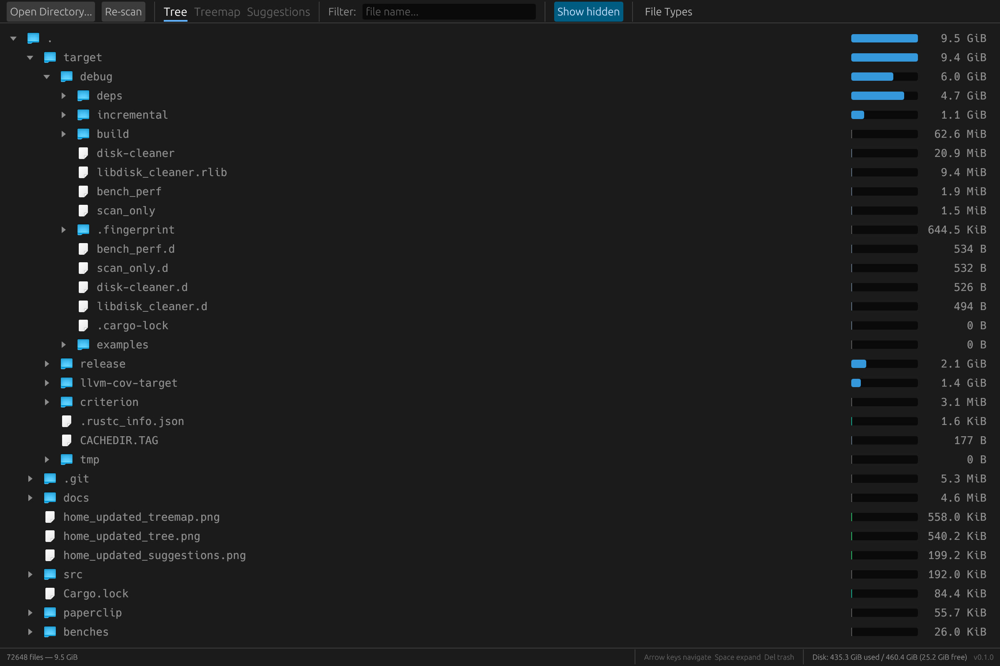
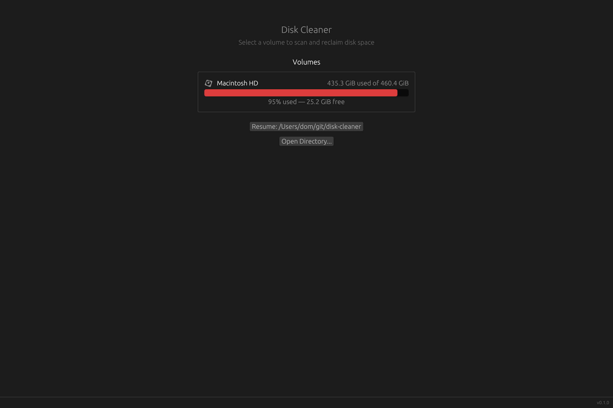
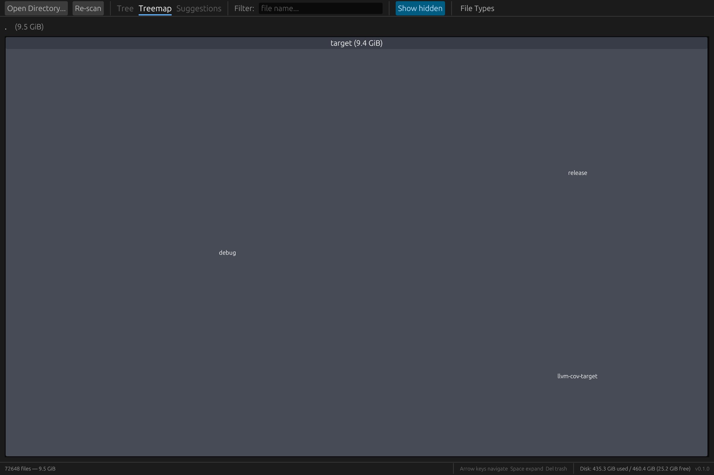
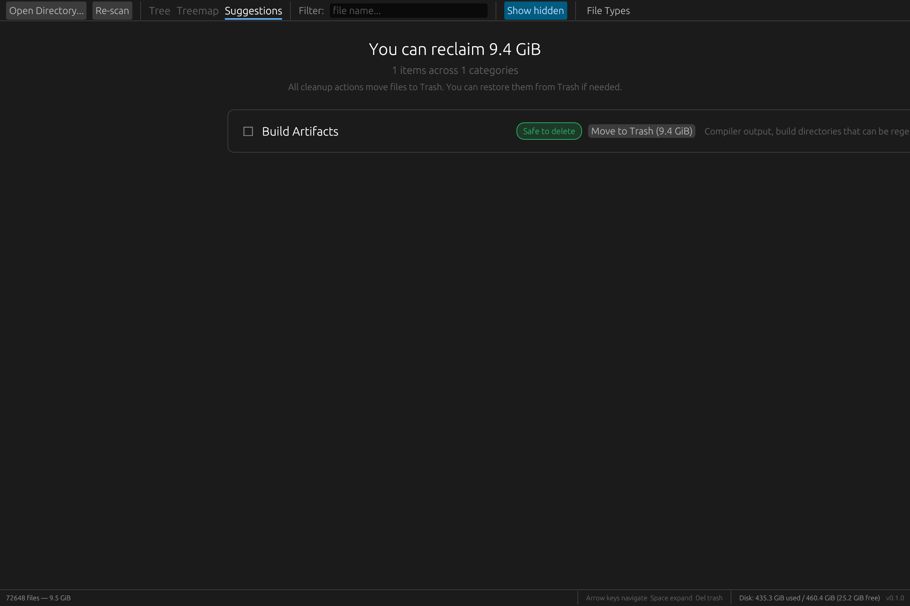

A fast, native desktop app to visualize disk usage and clean up large files. Built with Rust and egui.

Everything you need to find and reclaim wasted disk space.
Multi-threaded directory traversal powered by rayon. Scans hundreds of thousands of files in seconds.
Browse your file system sorted by size with proportional bars. Instantly see what's eating your disk.
Interactive squarified treemap shows disk usage at a glance. Click to drill into any directory.
Automatically identifies build artifacts, caches, and other safely deletable files with one-click cleanup.
Move files to Trash or delete permanently. Batch operations for cleaning up multiple items at once.
Filter by file name or type. Category sidebar breaks down space by archives, images, documents, and more.
See Disk Cleaner in action.



Requires Rust 1.70+. Clone and build from source.
# Clone the repository git clone https://github.com/domsleee/disk-cleaner.git cd disk-cleaner # Build and run cargo run --release